Chapter 5 Results
#numerical
#histgram of price
ggplot(data=dataset, aes(price))+
geom_histogram(fill='lightblue',color='grey')+
labs(x='price')+
ggtitle('Histogram of all price')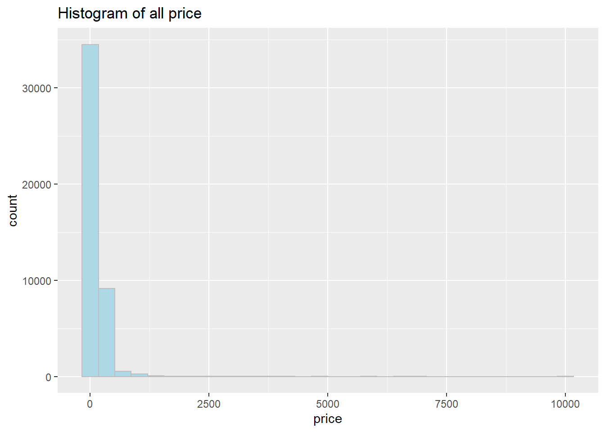
ggplot(data=dataset, aes(price))+
geom_histogram(binwidth=10,fill='lightblue',color='grey')+
scale_x_continuous(name="price", limits=c(0, 1500))+
labs(x='price')+
ggtitle('Histogram of price from 0 to 1500')
There exist a significant outlier in 10000, so we scale our x aixs from 0 to 1500.
In our new histogram, we could conduct that there is a trend that most host would like to give a integer price with 0 in ones/ unit digit, and also 0 in tenth digit.
#histgram of rating
ggplot(data=dataset, aes(rating))+
geom_histogram(binwidth=5,fill='lightblue',color='grey')+
labs(x='Rating')+
ggtitle('Histogram of all Rating')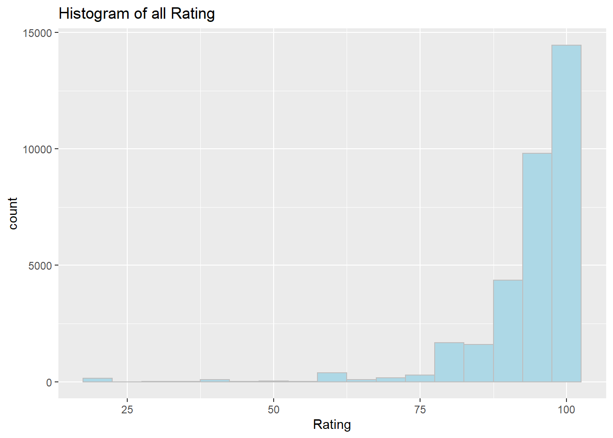
From the rating plot, most the rating score concentrated on (75,100), and people trend to give 100 as the default score. Otherwise, the score will be super low less than 60. It show the rating score are subjective to personal emotion. And also, select bias effect the rating score, once people choose give the listing housing a review, they either extremely love or hate this house.
#boxplot
ggplot(dataset, aes(x = reorder(neighbourhood_group, -price, median), y = price)) +
geom_boxplot(fill = "green4",alpha=0.5)+
scale_y_continuous(name="price", limits=c(0, 500))+
labs(x='Neighbourhood Group')+
ggtitle('The Boxplot of Five Neighbourhood Group with ordered by price median')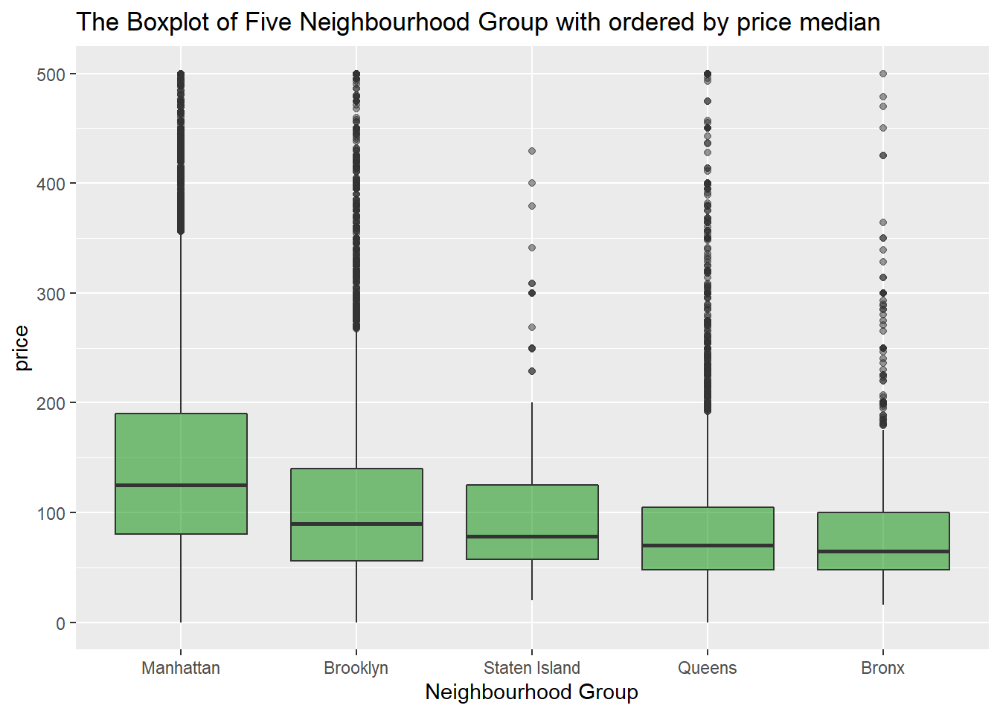
The box plot of five neighbourhood and rank by the median of prices shows Manhattan has the highest median price. And the Bron has the lowest median price. Even though the median price in five neighbourhoods are relative simliar. In addition, there is a hugh amount of outliers in the higher price. Even if there are a wider range outlier, the majority price still lower than $400.
dataset$host_since <- format(as.Date(dataset$host_since),
format="%Y%m%d")
dataset$host_since <- as.Date(dataset$host_since,
tryFormats = "%Y%m%d")
df2 <- dataset %>%
filter(price<800 & host_since<="2020-01-01" & host_since>="2019-01-01")
#group_by(host_since)
ggplot(df2,aes(host_since,price))+
geom_point(color="pink1")+
geom_smooth(method="loess",span=0.4,color="orangered4")+
labs(x="Date",y="Price")+
ggtitle("NYC Airbnb price in Year 2019")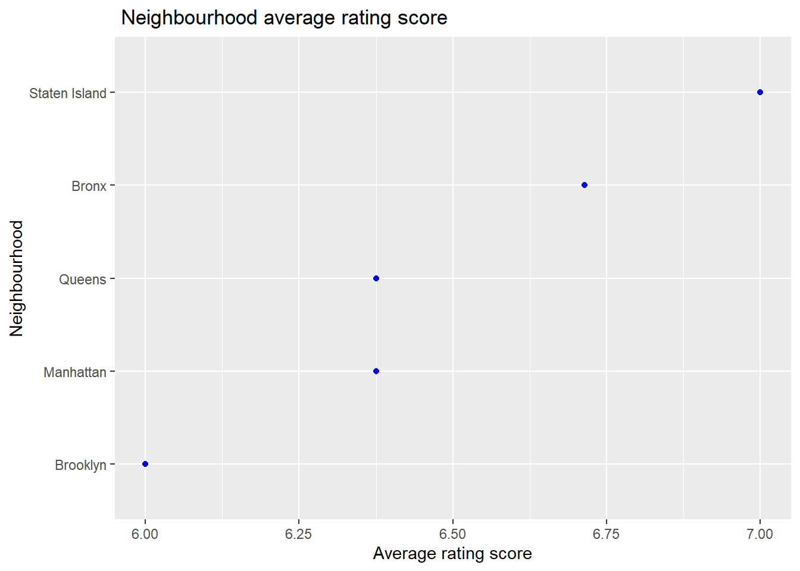
df4 <- dataset %>%
filter(price<800 & host_since<"2018-01-01" & host_since>="2017-01-01")
ggplot(df2,aes(host_since,price))+
geom_point(color="lightblue")+
geom_smooth(method="loess",span=0.4,color="midnightblue")+
labs(x="Date",y="Price")+
ggtitle("NYC Airbnb price in Year 2017")
df3 <- dataset %>%
filter(price<800 & host_since<"2021-01-01" & host_since>="2020-01-01")
ggplot(df3,aes(host_since,price))+
geom_point(color="tan1")+
geom_smooth(method="loess", span=0.4, color="tan4")+
labs(x="Date",y="Price")+
ggtitle("NYC Airbnb price in Year 2020")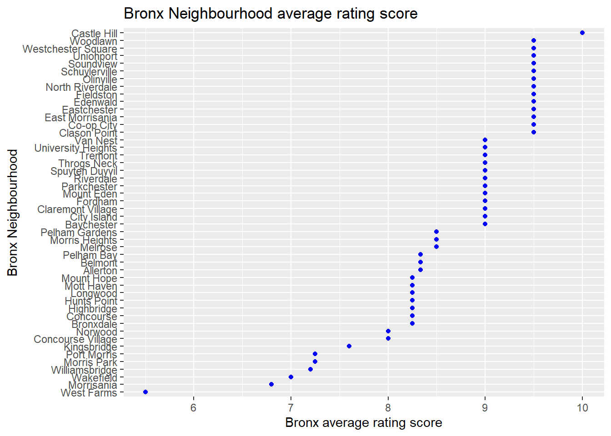
First, we adjust the price since we consider extreme price points as outliers. We filter the dataset when price is less than 800 dollars. Then we draw dot plots to see if there is any obvious pattern for date and price, which means we would like to explore if price is significantly associated with seasons.
We separated by years since it is hard for us to see any patterns for the entire time period. Then we zoom in the data a little bit to see if there is any changes. The first and third plot is for year 2017 and 2019 separately, it is also hard to tell seasonal trend exists from both plots. And two plots look pretty similar. However, we can say that the frequencies of high prices are commonly seen in summer(may-Jun) and winter(Dec), which is kind of consistent with summer vacation and winter holiday. And the price is going to drop a little especially in Oct. Therefore, we could conclude price will be higher than usual especially in summer/winter holidays when people are more likely to travel during those time periods.
Then we would like to know how the covid19 pandemic will affect Airbnb, so we draw another plot for year 2020. Based on the plot, we observe some differences between year 2020 and other years. First, we know the overall price is much lower than usual. Second, after April, the number of booking is jumped down so obviously, which is consistent with the situation of the pandemic.
df_new <- dataset %>%
na.omit() %>%
mutate(rating_rank=case_when(rating==100 ~ "Perfect",
rating>=95 & rating<100 ~ "Very Good",
rating>=90 & rating<95 ~ "Good",
rating>=80 & rating<90 ~ "Fair",
rating<80 ~ "Bad"
))
c1 <- c("skyblue3","lightblue","salmon","pink1")
vcd::mosaic(room_type~neighbourhood_group,
highlighting_fill=c1,
df_new)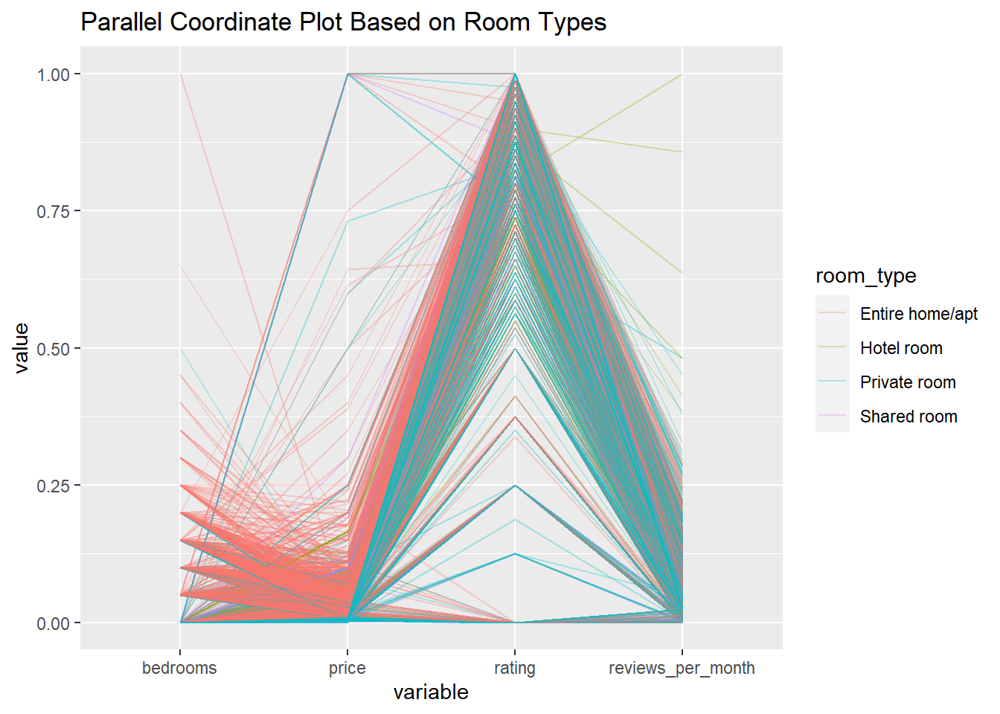
c2 <- c("skyblue3","salmon")
vcd::mosaic(host_is_superhost~neighbourhood_group,
highlighting_fill=c2,
df_new)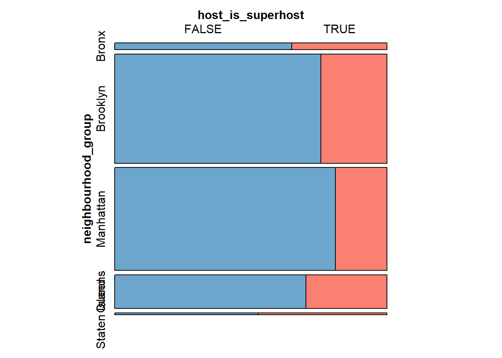
c3 <- c("skyblue3","salmon")
vcd::mosaic(host_is_superhost~rating_rank,
highlighting_fill=c3,
df_new)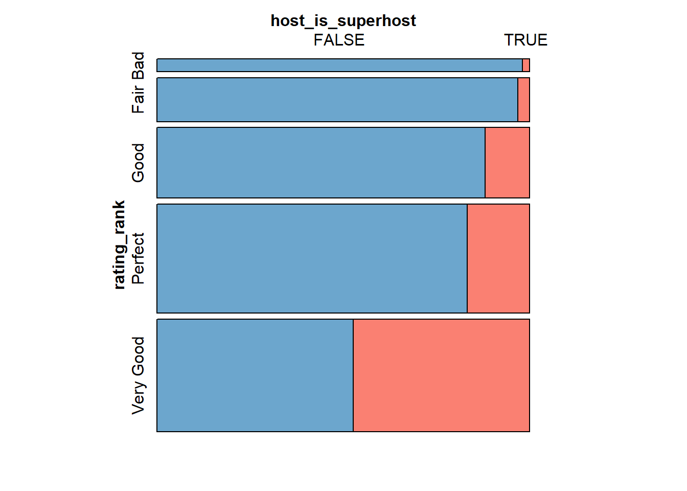
We applied mosaic plots to see frequencies for five areas based on room type and superhost, seperately. From the first plot, we can observe that entire home/apt and private room take the majority part of the room types in NYC Airbnb, which makes sense since few guests would like to share room/space with strangers. Also, it makes hosts’ lives much easier if they own the entire house/apt when they join the Airbnb, since they do not need to have aggrements with their roommates.
The second plot shows that non-superhost is the majority among hosts in different areas in NYC.
Also, we would like to find whether there is a positive relationship between superhost and rating, which implies superhost is more likely to get a better rating score for living experience. From the last plot, it is not obvious for us to confirm that hypothsis, however, we observe a bunch of guests have great living experience, regardless of superhost or not.
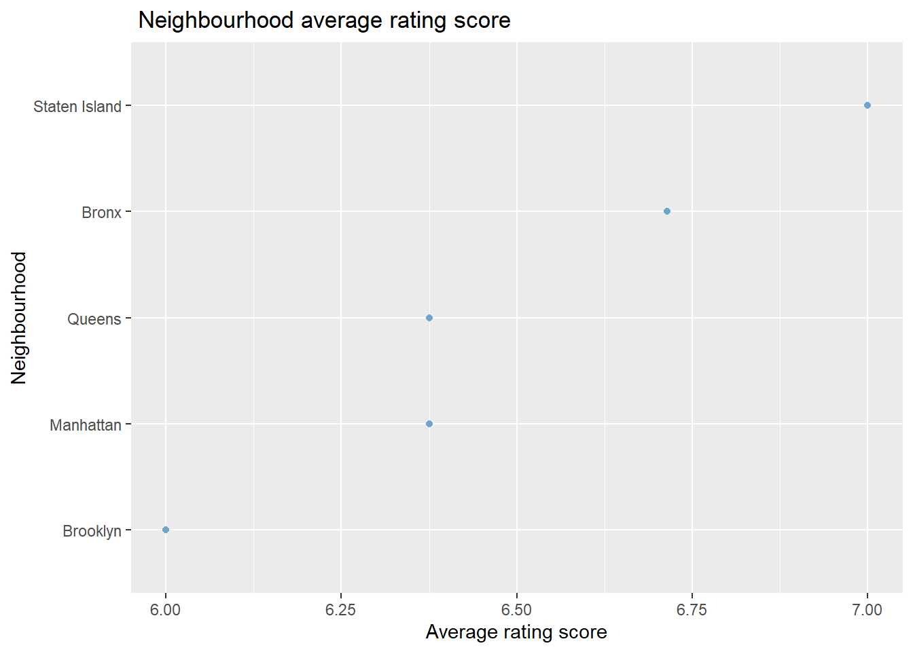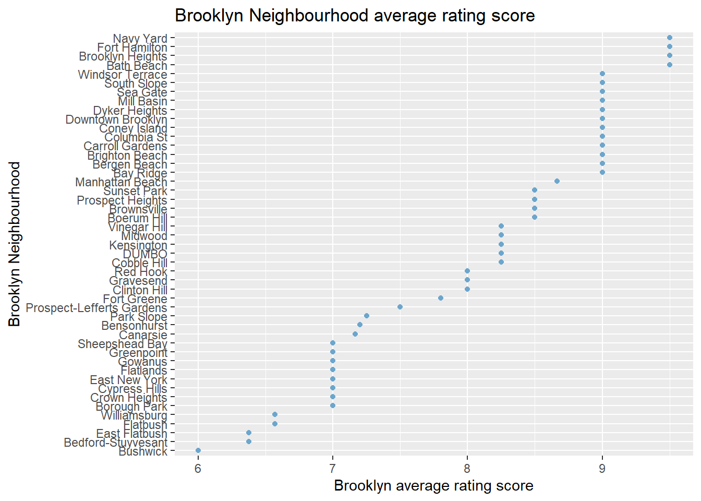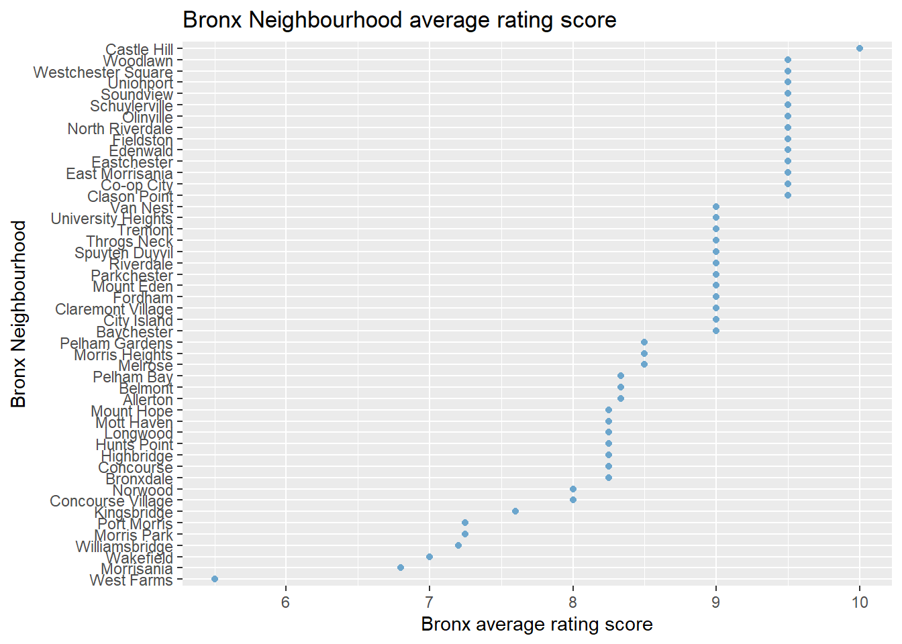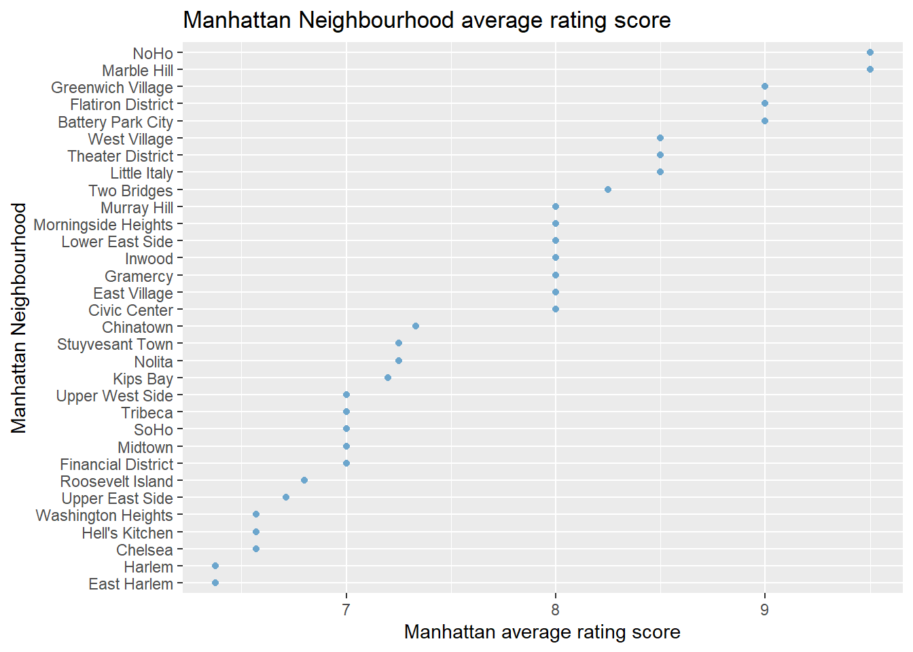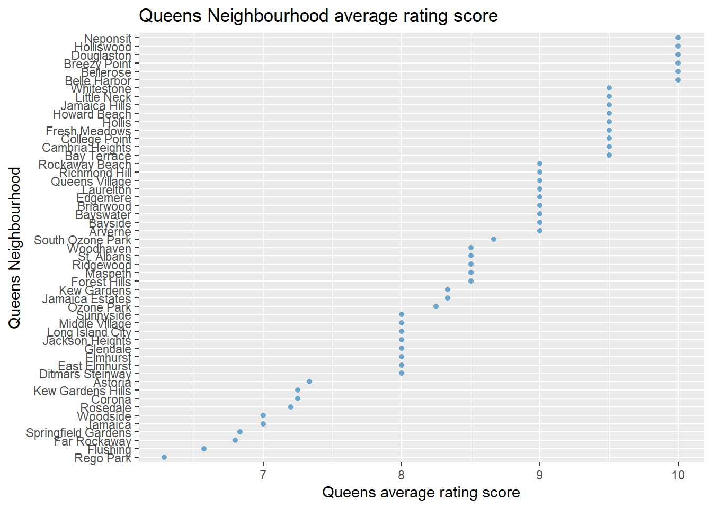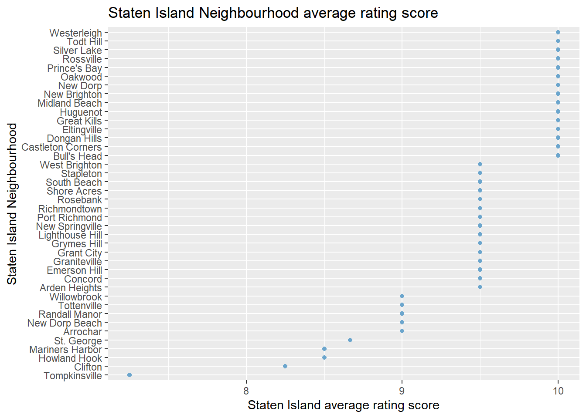
The cleveland dot plot of five neighbourhoods, we could see the average rating score of Staten Island is the highest, while Brooklyn is the lowest rating score. Besides, the average rating score of all neighbourhood group are apporomately simliar the highst is 7 and lowest is 6.
In Brooklyn, Bushwick has the lowest average rating score about 6, while Navy Yard, Fort Hamilton, and Brooklyn Heights, are the three neighbourhood touristor thought they are perfect with grade 10. Besides, most neighbourhoods in Brooklyn gets a score from 7 to 9.
In Bronx, the score range are relatively wider, which means people may be polarization. West Farm has the lowest average rating score about 5.5, compare with Castle Hill has the highest rating score in 10 as perfect. The average rating score of all neighbourhood group in Bronx are from 8.3 to 9.5.
In Manhattan, NoHo and Maple Hill has the highest rating score. And those central business district and shopping center like Midtown has the relatively lower rating score. And we can see the Upper town west where Columbia located also has the relatively low rating score. In addition, Harlem and East Harlem have the lowest score around 6.33.
In Queens, Rego Park has the lowest score like 6.2, and about 6 neighbourhood has the highest rating score.
In Staten Island, the range of score are narrower than others, which means people recommend most neighbourhood in Staten Island. Tompkinsville has the lowest rating score about 7.1. Other neighbouhood in Staten Island have a score higher than 8. And most of them are either 9.5 or 10. Staten Island might be most recommend living place for tourist.
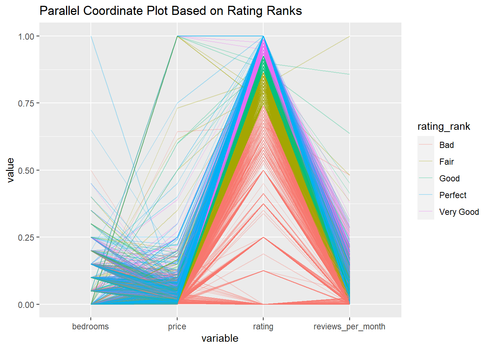
We use parallel coordinate plots to explore if any relationships exist among those numeric variables, such as number of bedrooms, price. Also,we draw those plots based on levels of selected categorical variables, such as rating_rank, room_type.
The first plot is grouped by room_type. From the plot, we see entire home/apt and private room have a majority part among all types. We observe there is a negative relationship between number of bedrooms and price, which makes more sense if we consider room types here. It is obvious to see there is a positive relationship between price and rating. If price is high, the quality of the house is great, on average, thus guests will have good living experience. What’s more, there is a negative relationship between rating and reviews_per_month.
The second plot is based on rating_rank. The shape of the plot is pretty similar with the one in the first plot. Negative relationships between number of bedrooms and price, rating and reviews_per_month. And a positive relationship between price and rating.
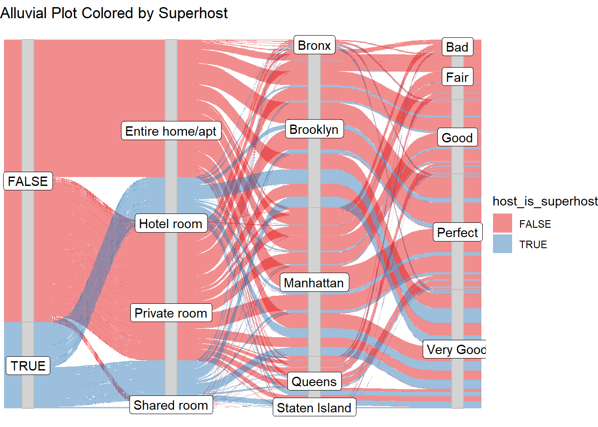
From the alluvial plot, we clearly see that super-host is a small part among hosts in NYC Airbnb since a bunch of flows go through the FALSE node. For room types, entire home/apt and private room take the majority part among all types, which is consistent with travelers’ preference. Also, we observe that most Airbnb housing is located in Manhattan, which implies travelers will consider Manhattan first and it has a priority over other areas in NYC. In addition, guests have great living experience on average since most guests give the housing very good score. From the plot, we see a lot of flows pass through ranking nodes: Good, Very Good and Perfect. Also, super-hosts tend to have higher ratings since we barely see blue flows via Fair and Bad nodes. In general, Airbnb housing in NYC provides guests/travelers great living experiences.